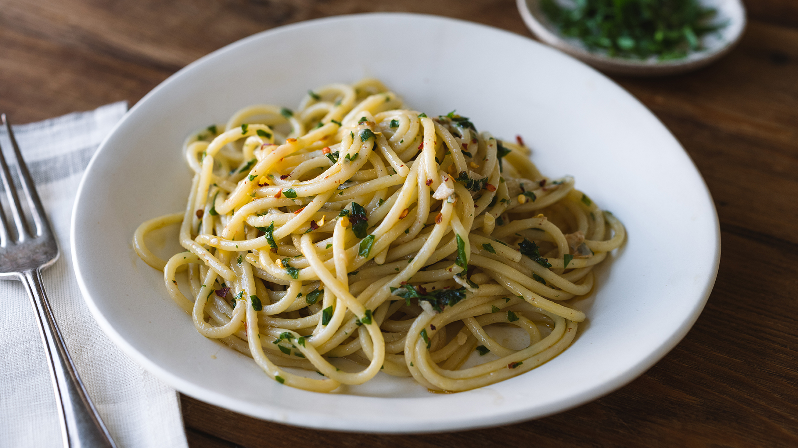

Aglio e Olio

Description
Spaghetti Aglio e Olio (Italian for garlic and oil) is a simple, traditional Italian pasta. This recipe takes it back to basics, utilizing only a few ingredients to create tons of flavor.
By simply toasting garlic and red pepper flakes in olive oil, we can make a light yet rich sauce. This meal is perfect for when you're short on time or after a long day of work.
Ingredients
- Spaghetti
- High quality extra virgin olive oil
- 3 cloves garlic
- Parsley
- Red pepper flake
- Parmigiano reggiano
Steps
- Set a pot of salted water to boil, add spaghetti noodles once pot is at a boil
- Thinly slice garlic
- In a saucepan, add enough olive oil to coat the bottom of the pan. Set to medium-low heat.
- Add garlic and red pepper flakes to pan
- Toast garlic and pepper in oil until garlic is slightly browned
- Add oil to boiled spaghetti noodles
- Thoroughly mix, garnish with parsley and parmigiano reggiano